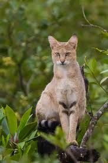

Gato de la jungla
 Considerado como extinto en Tailandia, el gato de la jungla resurgió en Dawna Tenasserim, según imágenes de cámaras trampa del 2017. Fue incluido en la lista de especies en peligro crítico por el Gobierno de Tailandia debido a la presión que enfrenta ante la caza y la pérdida de hábitat.
Amenazas
Las principales amenazas para el gato de la jungla en Tailandia son la caza furtiva y la pérdida de hábitat.